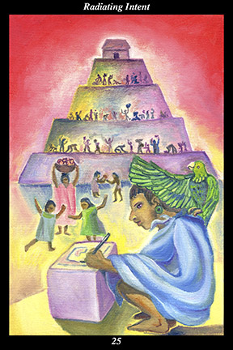

 | IMAGEA male warrior inscribes symbols onto a stone for the pyramid upon which the whole community is working. On his shoulder is perched a sacred bird, whose outstretched wing directs all this activity. |
INTERPRETATION
This hexagram depicts the way purposefulness moves outward from the center, manifesting itself in ever-widening spheres of activity. The male warrior symbolizes the way of testing and training human nature that increases its versatility and fortitude. Inscribing symbols onto a stone means that you find your voice and perform acts of lasting meaning and value. That the stone fits into the pyramid means that your actions are part of a greater design of harmony, symmetry, and balance. The whole community working together on the same project symbolizes people united by a common vision. The sacred bird perched on the shoulder means that your spirit guide accompanies you everywhere and is always nearby. The wing directing all this activity symbolizes the guiding spirit’s creative intent, which inspires both individuals and groups to devote their energy to something greater than themselves. Taken together, these symbols mean that far-reaching accomplishments can be achieved by conscientiously attuning yourself to your spirit guide’s intent.
ACTION
The masculine half of the spirit warrior joins with others in order to advance as far as possible during a time of progress. The difficulty here is deciding which group to ally yourself with, since there are many competing for members. In a time when cooperation and collaboration produce great
benefit for many, there still remain groups committed to authoritarianism and the control of resources: it is essential that you avoid groups serving only their own narrow interests and consider only those serving the widest possible good. In particular, avoid those repeating familiar catchwords and phrases in an attempt to hold their members to outworn ideologies and practices. You can recognize constructive and progressive groups by the startling aspects of their speech and action, which reflect your own emerging way of looking at the new and untried alternatives to failed solutions. Work with egalitarian groups whose wider vision is demonstrated by what they accomplish locally. Incorporate everyone into the work, include everyone who wishes to contribute: together, you can make changes that bring
benefit to others far beyond your sphere of activity. Above all, follow the spirit of intent: do not hesitate to change groups if yours betrays its original and fundamental principles.
INTENT
Times of progress emerge from times of stagnation, times of advance follow times of hardship: a common vision emerges from shared adversity. When people no longer seek guidance from those with all the trappings of power and authority, then they create projects that are supported by their peers because they provide a meaningful outlet for people’s pent-up energies. Because such projects are conceived from the ground up, they are the collective work of the community, made up of all the lives and talents and efforts and contributions of its members. It is a time when greatness is defined by community spirit, the totality of individual expressions bound together by a common purpose and shared lives. In an atmosphere of equality and creativity, people undertake altruistic projects voluntarily because they feel responsible to contribute to the whole of which they are a part.
SUMMARY
Your influence is growing, take care what you think. Act as though your every thought was being inscribed in stone. Live as though every moment is a stone upon which you are inscribing a wish. Dedicate each of these spirit-stones of your intent to the living pyramid of creation. Cultivate good will toward all. Collaborate with those of like mind. Help organize community endeavors.
THE LINE CHANGES
1° The instincts are part of the animal nature—they are powerful allies but they must follow and not lead. Study what motivates your body to do what it does—reflect on the direction this is taking you. Decide on the direction you want to go in and train your animal nature to help you get there.
2° This is a strong, well-balanced partnership—both of you are leaders but you work together rather than competing for recognition. Continue to go your own ways together—the destination you share benefits all. Your hard work will be rewarded—push forward.
3° The instinct to dominate others creates inferior superiors who make the lives of those under them miserable. Such people will always overstep their bounds. Give ground, pretend to be cowed, and the wrong-doer rushes into the trap—then appeal to a higher authority to enforce ethical standards.
4° The window of opportunity opens—both the inner and outer obstacles to success dissolve. All your experience gives both others and yourself confidence in your ability to take on a higher level of responsibility. Study the details of your duties—this proves key to reestablishing the balance.
5° When those who lead are good-hearted but without strong will, then people will lose focus, dissension will arise, and direction will drift aimlessly. You may hold on by not doing anything wrong, but this is not yet leadership. Move to a position more suited to your temperament.
6° Pushing ahead stubbornly brings you to a worrisome impasse. Stop here and look inside instead of outside—recognize that the real opponent is the one within and you can regain your momentum. Accept fault for going too far and work to make up for it—the conscience tames the animal nature.